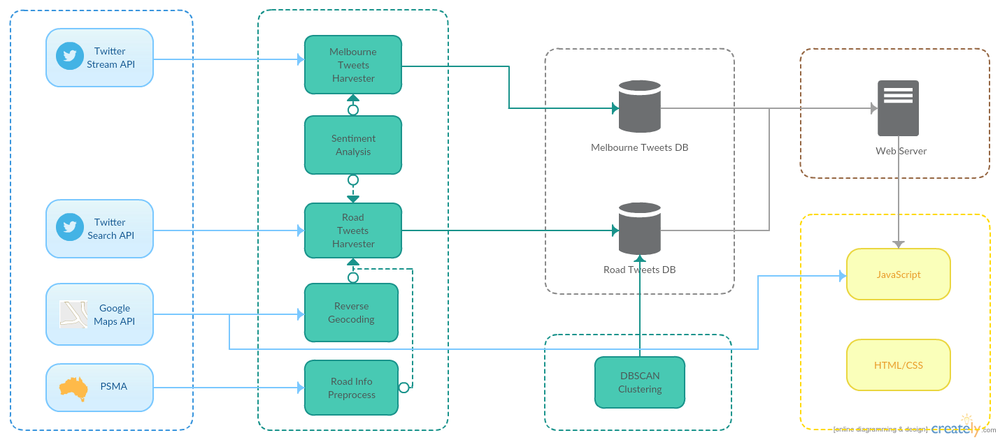

Exploring the Relation between Transport Congestion and Sentiment through TwitterStudent: Huabin LiuSupervisor: Professor Richard Sinnott
Objectives
Analyzing Sentiment on Melbourne Tweets and Melbourne Road Tweets;
Exploring traffic flow on Melbourne Road Tweets.
Architecture
